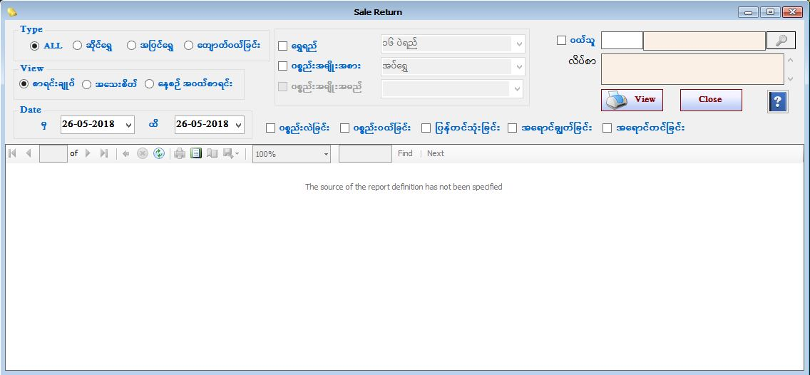

Purchase Stock Item ( ကျောက်ဝယ်ခြင်း ) Report Setup
Purchase Stock Report(PurchaseInvoice)
Purchase Stock Gems Report(PurchaseInvoiceGems)

- Reports အောက်ရှိ Purchase Stock Report Form ကိုဖွင့်ပါ။
- Purchase Stock Report Form တွင် ကျောက်ဝယ်ခြင်းစာရင်းကို ကြည့်လိုပါက ကျောက်ဝယ်ခြင်းကို ရွေးချယ်ပြီး ကြည်ရှုနိုင်သည်။
- စာရင်းချုပ်အလိုက်ကြည့်လိုလျှင် Summary ကို on ပြီး ကြည့်ရှုနိုင်သည်။
- Detail အလိုက်ကြည့်လို်ပါက Detail ကို on ပြီး ကြည့်ရှုနိုင်သည်။
- မိမိကြည့်လိုသော From Date နှင့် To Date ကိုရွေးချယ်ပေးရပါမည်။ From Date နှင့် To Date အတွင်း ဝယ်ယူထားသော ပစ္စည်းအဝယ်စာရင်းများကိုတွေ့ရမည် ဖြစ်သည်။
- Gem Category အလိုက်ကြည့်လိုလျှင် Gem Category ၏ check box ကို on ပြီး ကြည့်လိုသော Gem Category အား combo box တွင်ရွေးချယ်ပြီး ကြည့်ရှုနိုင်သည်။
- Purchase Stock Report Form အား အသုံးပြုပြီးပါက Close Button ကိုနှိပ်၍ ပိတ်နိုင်ပါသည်။